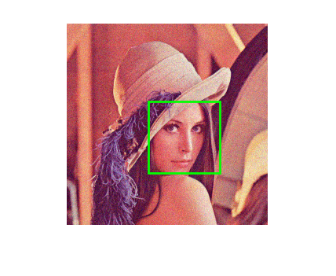

Face Detection
Here is an example that illustrates how to detect faces in a live video stream.
Load cascade file
xml_file = fullfile(mexopencv.root(),'test','haarcascade_frontalface_alt2.xml'); classifier = cv.CascadeClassifier(xml_file);
Set up camera
camera = createVideoCapture([], 'lena'); pause(2); % Necessary in some environment. See help cv.VideoCapture assert(camera.isOpened(), 'Camera failed to initialize'); disp('Face detection demo. Press any key when done.');
Face detection demo. Press any key when done.
Set up display window, and start the main loop
window = figure('KeyPressFcn',@(o,e) setappdata(o,'flag',true)); setappdata(window, 'flag',false); % Start main loop while ishghandle(window) % Grab and preprocess an image im = camera.read(); if isempty(im), break; end im = cv.resize(im, 0.5, 0.5); gr = cv.cvtColor(im, 'RGB2GRAY'); gr = cv.equalizeHist(gr); % Detect faces boxes = classifier.detect(gr, 'ScaleFactor',1.3,... 'MinNeighbors',2, 'MinSize',[30,30]); % Draw results imshow(im); for i = 1:numel(boxes) rectangle('Position',boxes{i}, 'EdgeColor','g', 'LineWidth',2); end % Terminate if any user input flag = getappdata(window, 'flag'); if isempty(flag) || flag, break; end pause(0.1); end % Close camera.release();